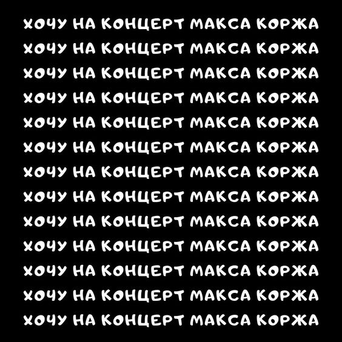

Piletid
Austatud reisijad!
Tahame teile meelde tuletada, et meie ürituste pileteid saab
osta infopunktist. Siiski palume teil tähelepanu pöörata, et
pileteid saab osta ainult juhul, kui ostetakse piletid üritusele,
kus osaleb Maks Korž.
Täname mõistmise eest ja ootame teid meie üritustel!
